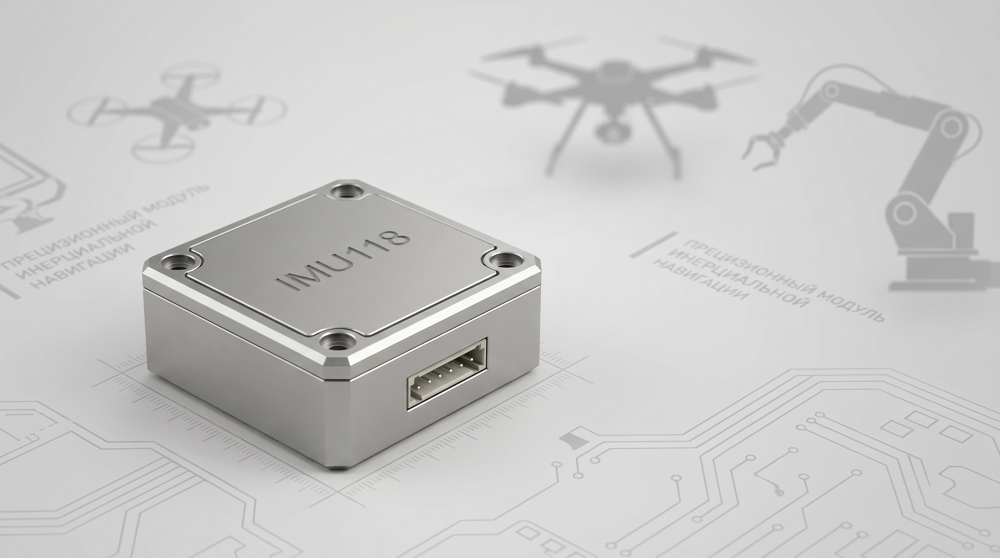

Инерциальный модуль IMU118 (UART) для AGV и мобильных платформ
Пространственная обратная связь как дополнение к энкодерам: когда вал “считает обороты”, а платформа живёт своей динамикой

Здесь будет размещён рендер или фото модуля и/или пример установки в узле. Страница уже готова к добавлению изображений без изменения структуры.
Зачем IMU, если уже есть энкодер?
Энкодер честно измеряет угол/скорость вала. Но в колесных модулях, мобильных платформах и механизмах с проскальзыванием он не видит то, что важно системе управления: реальные ускорения и поведение платформы в пространстве.
Инженерная логика
Ключевые характеристики
| Интерфейс | UART |
|---|---|
| Частота выдачи данных | 200 Гц |
| Гироскоп | ±500°/s |
| Акселерометр | ±16g |
Сценарии применения
- AGV / AMR
- мобильные платформы
- складская автоматизация
- конвейерные балансиры
Почему точная пространственная обратная связь экономит ваш бюджет?
В B2B-проектах цена ошибки редко ограничивается заменой одного узла. Отказ механики или “плавающая” динамика под перегрузками обычно тянут цепочку затрат: простой, логистика, повторная закупка, повторная наладка и управленческие издержки.
На практике повреждение узла стоимостью условно 10 000 у.е. может приводить к суммарным потерям порядка 40 000 у.е. — за счёт времени и остановки процесса, а не только “железа”.
Промышленный IMU в составе сервосистемы помогает раньше фиксировать нештатную динамику, точнее настраивать защитные алгоритмы и снижать риск каскадных отказов в мехатронном узле.
Коммерческие условия
Цена — по запросу. Для интеграторов, OEM и пилотных проектов возможен запрос тестового образца. Условия поставки зависят от объёма, задачи и схемы интеграции.
Для корректного подбора укажите платформу/узел, тип контроллера, частоты обновления и требования к задержке в контуре управления.
Связанные материалы
Скоро в “Полезной информации”
Ссылки будут добавлены после публикации статей, без изменения структуры страницы.